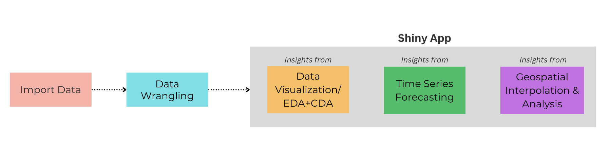

Overview
1. Motivation & Background
Climate change has become an increasingly urgent issue, with its effects becoming more noticeable worldwide. Singapore, as a tropical island nation, faces significant challenges due to climate change, including rising temperatures, increased humidity, more frequent extreme weather events, and rising sea levels. These environmental changes have far-reaching implications for public health, urban infrastructure, energy consumption, and economic resilience.
Over the past decades, Singapore has experienced a steady increase in temperature, with annual mean temperatures rising at twice the global average. This warming trend amplify urban heat island effects, increasing the risk of heat stress and related health concerns. Additionally, changes in precipitation patterns may lead to more intense rainfall events and prolonged dry spells, contributing to both flooding and water resource management issues. The rising temperatures also have economic consequences, as higher cooling demands strain the power grid, and extreme weather events disrupt transportation and daily activities.
Given the substantial impact of climate change on Singapore, it is crucial to analyse historical weather patterns to understand trends and potential future scenarios. By using meteorological data, we can gain deeper insights into how climate change is shaping Singapore’s environment and every day’s life. Our project seeks to visualize and analyse these climate trends, providing valuable insights into the evolving climate landscape of Singapore and its broader implications.
2. Objective
Our project aims to address several critical problems related to climate change in Singapore. One of the key objectives is to understand long-term climate trends by visualizing historical weather data, which will allow us to identify patterns such as rising temperatures, increased humidity, and extreme weather events.
Another important aspect of this study is examining the health impacts of climate change. By correlating weather data with records from the National Environment Agency (NEA), we aim to study the increase in the spread of vector-borne diseases like dengue. Dengue is one of the major climate-related health issues in Singapore, as warmer temperatures and increased rainfall create ideal breeding conditions for mosquitoes, leading to a surge in dengue cases. Understanding this links can help public health authorities implement better preventive measures and policies to mitigate health risks associated with climate change.
In addition to health concerns, climate change also has significant implications for energy consumption. As temperatures rise, the demand for electricity, particularly for cooling purposes, is expected to increase. Investigating these patterns will help us assess the impact of climate change on Singapore’s energy needs and inform sustainable energy policies that balance efficiency and environmental responsibility.
Furthermore, extreme weather events can disrupt transportation networks and affect commuting behaviors. Our project will explore the impact of weather conditions on taxi and hitch-hiring demand. By analysing these trends, we aim to provide insights that can support transportation planning and improve urban mobility resilience in the face of climate change.
Overall, our project seeks to provide actionable insights that can guide policymakers, urban planners, and public health officials in developing effective climate adaptation and mitigation strategies. By presenting our findings through visual analytics, we aim to enhance awareness of climate challenges and contribute to Singapore’s efforts in building a more climate-resilient future.
3. The Data sets
To analyse the impact of climate change on various aspects of daily life in Singapore, we will integrate multiple data sets from different government agencies. Our primary data set will be historical weather data from the Meteorological Service Singapore, which will provide information on temperature trends, rainfall patterns, humidity levels, and extreme weather events over the years. This data will serve as the foundation for identifying climate-related changes and their potential consequences.
In addition to weather data, we will incorporate a few other data sets with the following purposes:
1. Electricity consumption statistics from the Energy Market Authority (EMA): This data set will allow us to examine the correlation between rising temperatures and increased electricity demand.
2.Dengue case data from the National Environment Agency (NEA): By correlating dengue incidence rates with weather patterns, we aim to identify trends and evaluate the public health implications of climate change.
3. Private hire vehicle data from the Land Transport Authority (LTA): We will investigate how extreme weather events influence commuting behaviors and transport demand. Analysing fluctuations in taxi and ride-hailing demand during different weather conditions will provide insights into urban mobility patterns as well.
By combining these data sets, our project will provide a comprehensive analysis of how climate change affects various aspects of everyday life in Singapore.
4. Methodology

5. Literature Review
We analyzed six research articles in relation to our project topic:
1) Climatic influence on electricity consumption: The case of Singapore and Hong Kong - Singapore’s yearly electricity consumption may rise by 3-4% for every degree Celsius that the temperature rises, with the residential sector bearing most of the increase. Singapore’s major electricity user, with less seasonality than Hong Kong, is the industrial sector. The overall fluctuation is generally low, while the demand for power is higher in the commercial and residential sectors during the hotter months. The impact of temperature variations on power usage is assessed using two analytical techniques in this study: the time-series approach (uses monthly data from 1990 to 2015) and the decomposition approach (divides consumption into trend, seasonal, cyclical, and irregular components). The findings indicate that, while temperature has a statistically significant impact on energy use, particularly in the residential sector, the total effect is not as strong as it is in Hong Kong.
2) Impact of climate change and socioeconomic factors on domestic energy consumption: The case of Hong Kong and Singapore - The study examines Singapore’s energy usage using LMG (Lindeman, Merenda, and Gold Method) and PMVD (Proportional Marginal Variance Decomposition) techniques, and it finds that climatic factors such as the heat index and monsoon have a greater impact than population and GDP. According to the Generalized Additive Model (log-transformed to account for non-linear relationships) for Energy Consumption, humidity and temperature increase rather than decrease energy consumption. Using six CMIP5 models, future climate forecasts forecast higher energy demand, particularly in the residential sector. By 2100, Singapore’s environment is expected to stay tropical rainforest and extend north which could change the regional energy trends.
3) Impact of climate change on dengue fever epidemics in South and Southeast Asian settings: A modelling study -
The study examines dengue transmission in Singapore using an SEI-SEIR (Susceptible-Exposed-Infected-Recovered) model. To account for temperature-dependent characteristics including bite rate, extrinsic incubation period, and mosquito mortality rate, it divides human and mosquito populations into several stages of infection. Future temperatures and precipitation under three climate change scenarios are simulated using climate models from Phase 6 of the Coupled Model Intercomparison Project (CMIP6). Dengue forecasts for Singapore are based on daily rainfall and temperature data from 2012 to 2020. The most important temperature-dependent parameters were identified by uncertainty and sensitivity analysis, which revealed that dengue transmission is greatly enhanced by higher mosquito biting frequency and lower death in ideal warm conditions.
4) Impact of extreme weather on dengue fever infection in four Asian countries: A modelling analysis -
The paper analyzes dengue risk in each study location using a distributed lag nonlinear model (DLNM) and a two-stage meta-analysis. The DLNM accounts for nonlinear connections by capturing the delayed impacts of rainfall and temperature on dengue risk. To account for overdispersion of dengue cases, the study uses a Generalized Linear Model (GLM) with a quasi-Poisson Distribution. Public holidays, humidity, wind speed, rainfall, and temperature are examples of independent variables. For regional adjustment, the Best Linear Unbiased Prediction (BLUP) methodology is employed, which reduces estimation errors and yields more trustworthy country-specific results by enabling smaller sample sites to draw strength from bigger datasets.
5) A Review and Case Analysis of the Impact of Weather Factors on Public Transportation in Singapore - The study investigates how weather factors affect the efficiency of transportation. High temperatures increase the number of passengers on the MRT, and heavy rains results in lengthier bus wait times, according to a Pearson correlation test. A multivariate linear regression model measures how each weather variable affects the effectiveness of public transportation. Demand patterns are impacted by temperature, while delays are most affected by rainfall. Bus and train delays are predicted with good accuracy (approx. 85%) via a Random Forest machine learning algorithm.
6. Prototype
Click here to project’s prototype Shiny App.